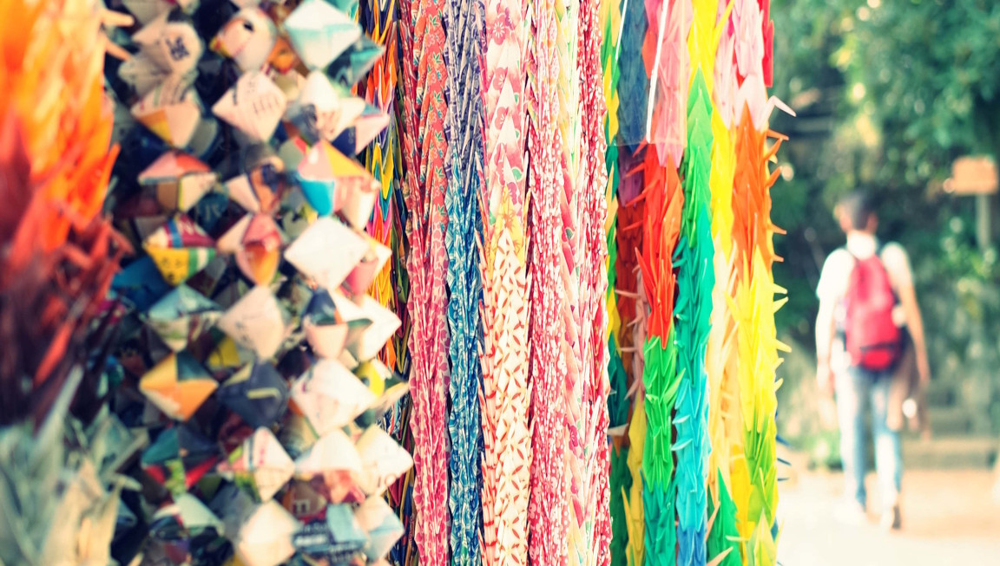

👉 Italiano

Keyboard Echoes - Writing

Short stories, thoughts, musings, articles on narrative techniques and more.
In this section of the site I collect articles on various topics.
I have identified five categories:
- Short stories, which may also have some autobiographical sparks
- Musings: articles of meditative mark and non-fiction
- Ego-thoughts: descriptions and reflections depicted from an individualistic way of seeing things
- Metawriting: articles about my works and the narrative techniques I use
- #20Again: the rejection of fatigue in a society that rejects death

#20Again


Ego-thoughts


Metawriting

Musings